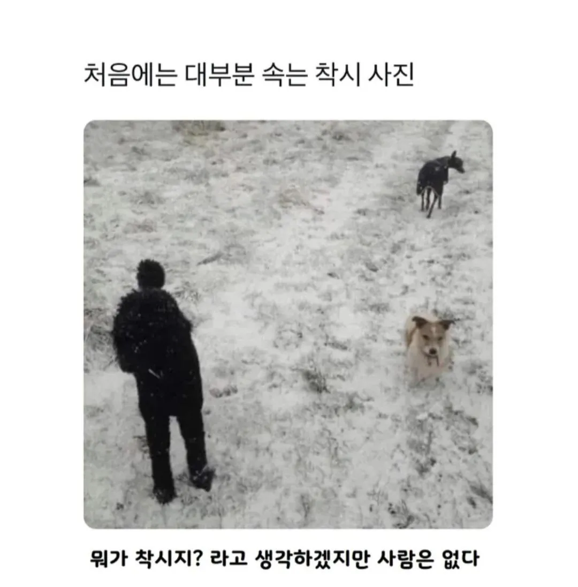

대부분 속는 착시 사진
댓글
6마리임
그건 개가 아니야
다른 뭔가라고

술좀 그만마셔
까만 푸들이고 사람 머리처럼 보이는게 꼬리였네
근데 합해도 3마리 아님?
4마리라는 건 저 댓글 단 놈이 개헛소리 한거지 뭐 ㅋㅋㅋㅋ
댓글단놈이 개임
술을 얼마나 먹었길래 ㄷㄷㄷ
6마리 아님?
끼얏호우
털모자 털옷 장착 러시아인인줄 알았는데
4마리째 잘안보이는디
아 검은 대형 푸들이구나 ㅋㅋ
왼쪽 푸들까진 이해됐는데 오른쪽 위에있는 생물은 도대체 뭐냐...?
염손가 했더니 그것도 아니고.... 꼬리가 저렇기생긴게 있어,?
강아지옷을 입힌 치와와?
머리처럼 보이는게 꼬리라는거지?
아... 개만 3마리구나
그리고 개는 4마리다